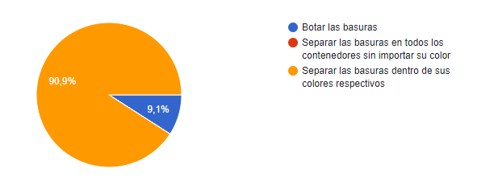
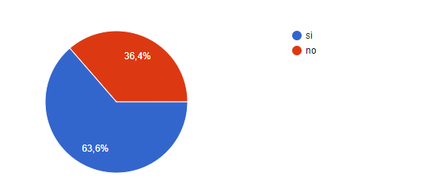
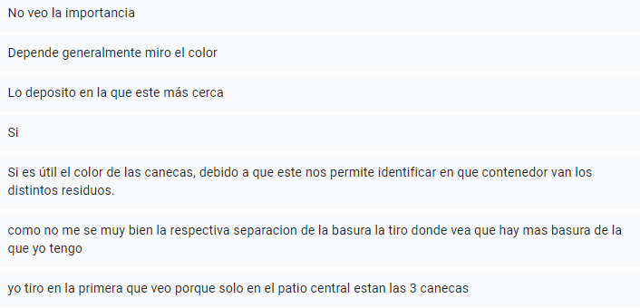
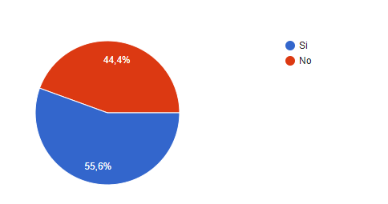
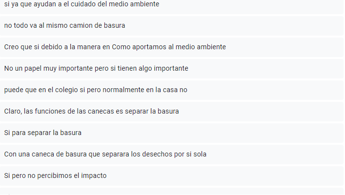
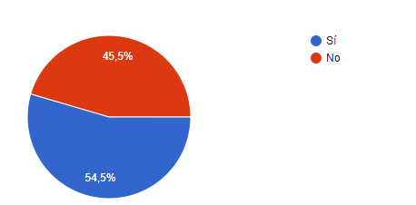
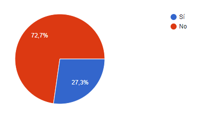
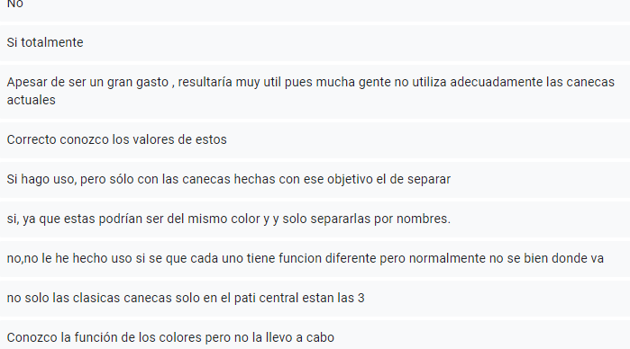
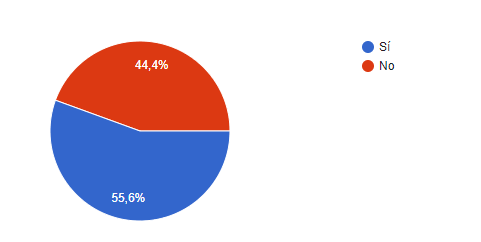

Pregunta #1//¿Usted sabe cual es el propósito de las distintas canecas dentro de la institución?

En base a los resultado mostrados se puede saber que si que hay un conocimiento del funcionamiento de estas canecas, aunque no es
de muchas personas este conocimiento
Pregunta #2//¿considera que las canecas del colegio son estorbosas o muy feas?

Viendo que hay un numero de personas considerablemente alto (sin ser un numero total a 100) que vemos
que los diseños, o el aspecto de estas canecas viejas no agradan
Pregunta #3//Ve util la variedad de colores en las canecas dentro del instituto o usted solo la tira "en la primera que ve

Vemos que hay una variedad mixta de respuestas, algunos dandole la utilidad, otros
conociendo la utilidad pero no aplicandola, y una sola opinion no conociendola en lo absoluto
Pregunta #4//Conocer el valor que puede llegar a tener el plastico que usamos en el dia a dia

Podemos ver un numero mixto en la cantidad de personas que saben que se puede hacer y que no se puede hacer con el
plastico hoy en dia. Pero hay un general que si se conoce
Pregunta #5//¿cree que las canecas tienen un papel importante en el proceso de nuestros residuos generados en el dia a dia?

En base a los resultado mostrados se puede saber que si que hay un conocimiento del funcionamiento de estas canecas
Pregunta #6//¿si pusieran canecas nuevas en el colegio usted pensaría que son con un propósito distinto a las comunes?

vemos un punto de aprovacion al decir que si se quiere ver una nueva propuesta
o minimamente algo nuevo
Pregunta #7//¿ Usted le pediría ayuda a alguien para reciclar en las canecas? ¿por desconocimiento tal vez?

Vemos que la respuesta, es no, las personas entienden como hacer lo que se les ha explicado
y lo que ellos ya saben por la practica o la explicacion
Pregunta #8//usted esta acostumbrado a ver muchas canecas de distintos colores pero ¿realmente se ha preguntado si tienen una finalidad de ser distintas? y de ser si la respuesta ha hecho uso de este conocimiento de colores

Vemos que si que hay un conocimiento y un uso de este codigo de colores, aunque hay respuestas que confirman que no se utiliza este conocmiento
Pregunta #9//En la institución ¿usted sabe cual es la campaña que apoya el reciclaje y la separación de basura dependiendo de los colores? y de ser asi la ha percibido tanto como las demas campañas escolares

Se sabe de la necesidad de el reciclaje, estando presente en las campañas escolares pero basandose en lo anterior visto
se infiere que se conoce como hacerlo, que es importante y aun asi no se hace la separacion
Pregunta #10//Cree que la separacion de residuos NO EL RECICLAJE es algo importante o solo hay que tirar al basura sin pensarlo
Se reafierma que se tiene presente la importancia de separar las basuras
pero aun asi no se hace con la regularidad que deberia
ENCUESTA DE SATISFACCION
ㅤpara tener una opinion mas clara se ha diseñado una encuesta de satisfaccion para
el lector donde podra dar su opinion acerca de su experiencia en la pagina